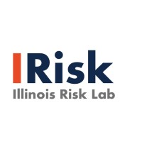

|
Haiyue Zhang
I am a first-year M.S. Computer Science student at the Columbia University.
Prior to joining Columbia in 2024, I earned my B.S. degree in Computer Science + Statistics from University of Illinois Urbana-Champaign.
I am interested in Software Engineering, Machine Learning, Nature Language Processing, Human Computer Interaction.
I am seeking SDE/DS/MLE internship on Summer 2025 and a full-time position on Spring 2026.
Feel free to drop me an e-mail, if you are interested in me or potential collaborations!


|
|
Education
M.S. in Computer Science
Sep 2024 - Dec 2025(expected)
Columbia University
|
|
B.S. in Computer Science + Statistics
Aug 2020 - May 2024
University of Illinois Urbana-Champaign (UIUC)
|

|
|
Work Experience
Microsoft Shanghai, China
Machine Learning Engineer May 2024 - Aug 2024
Established baseline with several machine unlearning techniques such as Split learning, Certified Data Removal to "forget" data from trained models like logistic regression, LSTM, MLP on time series, tabular, and image datasets.
Implemented machine unlearning framework on hospital's system, enhancing clinical data privacy by enabling data deletion and verifying unlearning effectiveness in trained models, while maintaining approximately 80\% accuracy.
|

|
Columbia Build Lab New York, NY
Software Engineer Sep 2024 - Present
Working under CBL MBA Founder at Mayah Design, a startup Company.
Enhance UI/UX design, creating visually engaging and user-friendly interfaces.
Developed an advanced recommendation system that provides personalized furnishing suggestions, offering customers a seamless design experience tailored to their unique style preferences and industry best practices.
|
|
Siebel School of Computing and Data Science Champaign, IL
Course Assistant Jan 2023 - May 2024
Hosted weekly Office Hour to support students, clarifying database programming languages (Mysql, MangoDB, Neo4j) and database concepts(Designing Schemas, Querying Databases, Manipulating Databases, Indexing Data).
Managed grading rubrics, ensuring meticulous evaluation of machine assignments and final capstone projects.
Regularly attended course assistants' meetings, collaborating to enhance and refine curriculum content.
|
|
DAQO Electrical Institute Co.,Ltd. Nanjing, China
Software Engineer Summer 2020 & 2021
Developed SCADA/EMS monitoring platform for transformer substations, facilitating immediate fault
detection.
Integrated cloud storage solutions to ensure comprehensive and secure storage of captured equipment data.
Developed a visualization platform to facilitate real-time data representation and immediate insight actions.
Resulted in a significant 25% increase in order volume and a notable 20% reduction in product fault rates.
|
|
|
Research & Projects
Illinois Risk Lab Champaign, IL
Research Assistant Under Professor Frank Quan Aug 2023 - Dec 2023
Implemented and compared various optimization techniques, including Google OR-Tools, PyVRP, VRPy, and strategies from Amazon, to enhance delivery efficiency and reduce costs for a top-tier pharmacy company.
Utilized Map API to capture real-world transit data and duration to generate distance/time matrix for models.
Crafted innovative graph algorithms to optimize routes, reduce fuel use, and elevate delivery efficiency.
|

|
Undergraduate Research Experience in Statistics (URES) Champaign, IL
Research Assistant Under Professor Steven A. Culpepper Aug 2023 - Dec 2023
Completed a project mastering Bayesian regression methods for binary, polytomous, and multiple outcome variables.
Analyzed heart attack dataset using advanced techniques like Hamiltonian Monte Carlo and Horseshoe Prior to build a Bayesian model and predict the effectiveness of blood pressure, cholesterol, fasting blood sugar, and more.
|
|
University of Science and Technology of China Hefei, China
Research Assistant Under Professor Xiangyang Li and Qi Song May 2023 - Aug 2023
Work on integrating Knowledge Graphs into Large Language Models to enhance LLM’s reasoning capabilities.
Tasked with embedding KG into LLM with a priority to maintain and enhance LLM model sophistication.
Utilized knowledge augmentation, refining LLMs’embedding and KGs for pretraining enhancements, and developed the KEFF framework with modules for knowledge enhancement and filtering.
|
|
Web-based scheduling Application: Parachute Champaign, IL
Codevelop with Raymond Wu, Yu Qian, Yuteng Zhuang Jan 2023 - Dec 2023
Employed as a fullstack engineer, builting Parachute.fyi, an advanced web-based scheduling tool eclipsing
when2meet.com by providing a sophisticated user interface and authentication system, employing cutting-edge technologies including React, Next.js, TypeScript, Prisma, tRPC, and PostgreSQL.
|
|
|
Journal
|